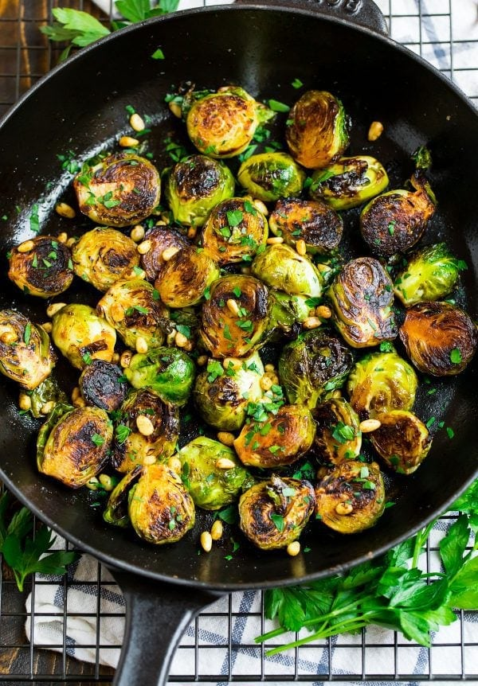

Pan Fried Brussels Sprouts

This dish is perfect for adding some greens into your diet. It is very simple to make
and is both delicious and nutritious!
Ingredients:
- Brussel Sprouts
- Spring Onion
- Chia Seeds/Any other seed or nuts
Cooking Steps:
- Clean your Brussels Sprouts and Halve them
- Heat up cast iron pan, add 2 tablespoons of oil
- Brussels Sprouts to pan face down and cook for 5 minutes
- Turn over Brussels sprouts and season with Salt and Pepper
- Close the lid and cook on other side for 3 minutes
- Open lid and add chopped spring onion and chia seeds, stirfry for 1 minute